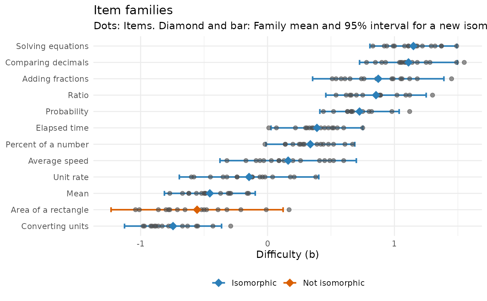

Summarizes the calibrated difficulties of items generated from the same item model (a family of isomorphs): The family's mean difficulty, how much its items vary around it, and whether the family mean could stand in for field testing a new isomorph.
Usage
calibrate_families(items, family = "model", b = "b", se = NULL, max_sd = 0.3)
# S3 method for class 'mv_families'
autoplot(object, ...)Arguments
- items
a data frame with one row per calibrated item.
- family
name of the column with the item model of each item.
- b
name of the column with the difficulties.
- se
optional name of the column with the standard errors of
b.- max_sd
largest within-family SD, in logits, for a family to count as isomorphic.
- object
a result of
calibrate_families().- ...
not used.
Value
A tibble of class mv_families with one row per family:
family, n_items, mean_b, sd_b (observed), sd_within
(corrected for estimation error when se is given), se_mean,
lower and upper (a 95% interval for a new isomorph), field_test_n
and isomorphic. It has print() and autoplot() methods.
Details
The observed spread of the difficulties in a family includes their
estimation error. With se, the error variance is subtracted, which
leaves the within-family SD: How much isomorphs really differ. For a
new isomorph, the family mean predicts its difficulty with a typical error
of about the within-family SD (plus the uncertainty of the mean). The
result also translates that error into the number of test takers a field
test would need to estimate the item's difficulty as precisely
(field_test_n, for a Rasch item and abilities from a standard normal
distribution).
A family whose within-family SD exceeds max_sd is not isomorphic: Some
variable in the item model changes what the items demand. Look for it
among the values the items were generated from, and split the model or
add the variable as a feature (see predict_difficulty()).
This is the two-step approach. A one-step alternative fits the responses
with the family as a fixed effect and a random effect for items, for
example with mirt's mirt::mixedmirt() (fixed = ~ 0 + family, random = ~ 1 | items) or with the eirm package; see the examples in the online
book's chapter on automatic item generation.
Examples
cal <- calibrate_families(itemtext[itemtext$a > 0, ], family = "family", se = "b_se")
cal
#> Item families: 12 families, 189 items; SD within corrected for estimation error
#> family items mean_b sd_within 95% for new item field_n isomorphic
#> Converting units 16 -0.74 0.19 -1.13 to -0.36 148 yes
#> Area of a rectangle 16 -0.56 0.34 -1.23 to 0.12 45 NO
#> Mean 15 -0.45 0.18 -0.81 to -0.10 161 yes
#> Unit rate 16 -0.15 0.27 -0.69 to 0.40 66 yes
#> Average speed 16 0.16 0.27 -0.37 to 0.70 69 yes
#> Percent of a number 16 0.34 0.17 -0.01 to 0.69 165 yes
#> Elapsed time 16 0.39 0.18 0.03 to 0.75 156 yes
#> Probability 15 0.72 0.15 0.41 to 1.04 222 yes
#> Ratio 15 0.85 0.19 0.46 to 1.25 143 yes
#> Adding fractions 16 0.87 0.26 0.36 to 1.39 83 yes
#> Comparing decimals 16 1.11 0.19 0.73 to 1.50 162 yes
#> Solving equations 16 1.15 0.17 0.81 to 1.49 208 yes
#> field_n: Test takers a field test would need to estimate a new isomorph's b as precisely
#> as its family mean predicts it. Isomorphic: SD within at most 0.30.
autoplot(cal)
